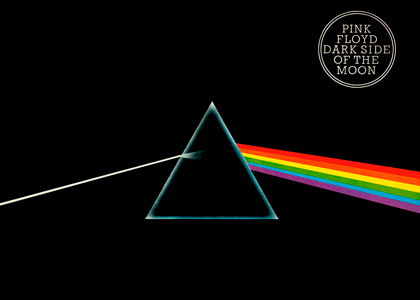

The Dark Side of the Moon
- Lado A
- N.º Título Letra Vocais Duração
- 1. "Speak to Me" Mason Instrumental 01:30
- 2. "Breathe" Waters, Gilmour, Wright Gilmour 02:43
- 3. "On the Run" Gilmour, Waters Instrumental 03:36
- 4. "Time" (incluso "Breathe (reprise)") Mason, Waters, Wright, Gilmour Gilmour, Wright 07:01
- 5. "The Great Gig in the Sky" Wright, Clare Torry Clare Torry 04:36
- Lado B
- N.º Título Letra Vocais Duração
- 1. "Money" Waters Gilmour 06:22
- 2. "Us and Them" Waters, Wright Gilmour, Wright 07:46
- 3. "Any Colour You Like" Gilmour, Mason, Wright Instrumental 03:25
- 4. "Brain Damage" Waters Waters 03:48
- 5. "Eclipse" Waters Waters 02:03
The Dark Side of the Moon é o oitavo álbum de estúdio da banda britânica de rock progressivo Pink Floyd, lançado em24 de março de 1973. O disco marca uma nova fase no som da banda, com letras mais pessoais e instrumentais menores, contendo alguns dos mais complicados usos dos instrumentos e efeitos sonoros existentes na época, incluindo o som de alguém correndo à volta de um microfone e a gravação de múltiplos relógios a tocar ao mesmo tempo.
Os temas explorados na obra são variados e pessoais, incluindo cobiça, doença mental e envelhecimento, inspirados principalmente pela saída de Syd Barrett, integrante que deixou o grupo em 1968 depois que sua saúde mental se deteriorou. O conceito básico do disco foi desenvolvido quando a banda estava em turnê, e muito do novo material foi apresentado ao vivo, muito antes de ser gravado.
A banda produziu o trabalho no Abbey Road Studios de Londres em diferentes sessões em 1972 e 1973 ao lado do produtor Alan Parsons, diretamente responsável pelo desenvolvimento dos elementos sonoros mais exóticos presentes no disco, e a capa, que traz um prisma sendo atingido por um feixe de luz o transformando em um arco-íris, foi desenvolvida para representar a iluminação de palco da banda, o conteúdo íntimo das letras e para atender os pedidos da banda por um trabalho "simples e marcante".
The Dark Side of the Moon foi um sucesso imediato, chegando ao topo da Billboard 200 nos Estados Unidos e já fez mais de oitocentas e três aparições na parada desde então, tendo vendido mais de quinze milhões de cópias e estando na lista dos álbuns mais vendidos da história no país, também no Reino Unido e na França, com um total de cinquenta milhões de cópias comercializadas mundialmente até hoje. A obra também recebeu aprovação total dos fãs e aclamação da crítica especializada, sendo considerado até hoje um dos mais importantes álbuns de rock de todos os tempos.
Em 2003, a revista especializada em música Rolling Stone anexou The Dark Side Of The Moon no segundo lugar de uma lista dos 200 álbuns definitivos no Rock and Roll Hall of Fame. Em 2010, foram lançadas duas edições, a chamada Immersion e a chamada Experience. A edição Experience possui um disco bônus com o álbum tocado na integra no Wembley Empire Pool em Londres em 1974, veiculado pela Radio BBC. O concerto da BBC só não foi lançado na integra por ausencia do lançamento oficial da musica Echoes, que existe no formato bootleg. A edição Immersion contem dvd e cds, além de outros itens.